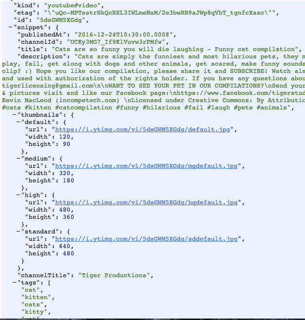

YouTube Recommendation System with Data Trends Analysis using YouTube API
Author: Aaron Wu (pwu8), Abhishek Dutta (adutta2), Natalie Roe (nroe), Preston Law (plaw), Wennie Zhang (yzhang46)
This Week's Work
Up until out first TA check-in, we've collected the data that we will be using from YouTube and have stored it in a database. Below are a few images of the data that we've collected:
Comment Feed Data
In terms of the video itself, we were able to obtain quite a lot of information about it including the channel it came from, the title, time it was published at and the thumbnail.
As you can see, there's quite a lot of data for us to work with, so we're hoping to be able to draw some interesting conclusions from our analysis of the data. A few questions we are considering answering in our project are:
- What makes a video go viral, and how can we predict that this will happen?
- What video length appeals most to users? Is there a point at which viewers become disinterested in the video due to its length?
- How is a user's profile related to the videos that they view?
- How does a video's thumbnail affect the number of views the video receives?
- Do certain topics coincide with major historical events?
- Are there consistent themes in high traffic areas?
The overarching theme of the analysis that we will be doing for this project is predicting future trends on YouTube based on historical data, and the questions listed above are just a few of the ways we may go about performing out analysis. Clearly, some questions may have a more obvious answer than others (analyzing the thumbnail would be really difficult) they are all interesting questions to consider and we would be able to create some nice visualizations from them too.
Analysis Topic
For our next blog post, we hope to have our web application that allows users to search for YouTube trends pertaining to a particular topic to be mostly fleshed out, including well-tested topic visualization and user interaction with past trends within our chosen category. We should also have our theme forecaster and analysis ready for integration with the main web app.
Home Page # is: here .